Activity: Creating a loft and swept protrusion
In this activity, construct a solid model using the Loft and Swept Protrusion commands. Edit end conditions and curves to adjust the overall shape of the model.
Objectives
In this activity, construct a solid model using the Loft (1) and Swept Protrusion (2) commands. Edit end conditions and curves to adjust the overall shape of the model.
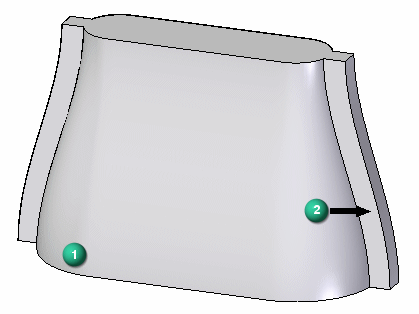
-
Open loft.par. This file contains sketches and curves that will be used to model the part.
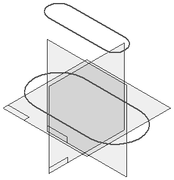
Create a loft protrusion using sketches provided in the file.
On the Home tab→Solids group, choose the Loft command in the Add list .
Hide the reference planes.
Select the sketch (base sketch) at location (1) shown for the first cross-section.
Select the sketch (top sketch) at location (2) shown for the second cross-section.
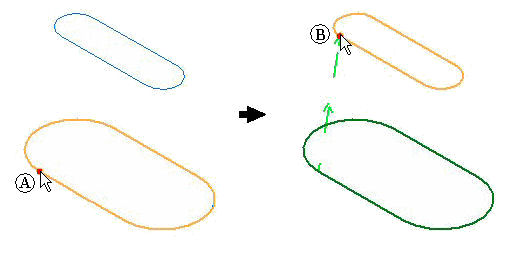
It is important to select the cross-sections at start locations where a twist will not be introduced in the geometry (or a self-intersecting result). If this condition occurs, an error message displays.
On the command bar, click Preview. Do not click Finish.
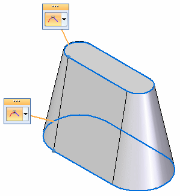
The result shown above uses the default end-condition of Natural. This is where the cross-sections connect using a linear vector.
On command bar, click the Extent step.
Change the end-conditions of both cross-sections. You can change the end condition type by using the tangency control handles (1) or by using the fields on the command bar. Set both End 1: and End 2: to Normal to section. This setting creates a lofted feature where the surface starts and ends with a normal vector to the cross-sections.
To use the tangency control handles, click the drop list (1) for tangency options.
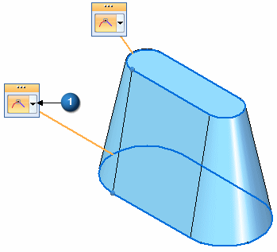
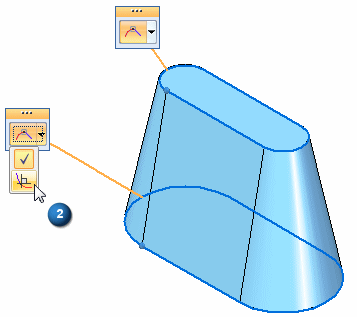
To use the command bar, click the Show/Hide Tangency Control Handles option (3).
Click Preview and then click Finish. Notice the results: (1) Normal to section, (2) Natural.
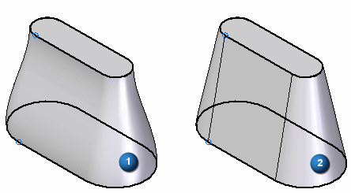
Add guide curves to further control the overall shape of the lofted protrusion feature. Edit the definition of the lofted protrusion completed in the previous step.
Turn on the display of curves. In PathFinder, click the check box on the curves named side curve 1, mirrored side curve 1, side curve 2 and mirrored side curve 2.
Click the Select tool and then select the protrusion in the part window.
Click Edit Definition.
On command bar, click the Guide Curve step.
Select each curve and then click the Accept button. Select and accept only one curve at a time. You can right-click or press Enter to accept the guide curve.
After selecting all four curves, click the Preview button.
Notice how the shape of the loft protrusion follows these guide curves. Dynamically rotate the model to better observe the shape. Click Finish.
Continue to refine the loft protrusion shape by editing the guide curves. When one curve is edited, the curve on the opposite side will adjust automatically because it is a mirrored element.
Click the Select tool.
Select curve named side curve 1.
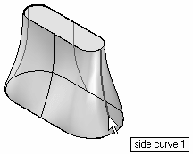
Click Dynamic Edit .
Select the red dot on the curve. This is the edit point on the curve.
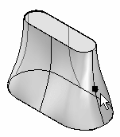
Click the Relative/Absolute Position button . Absolute uses the actual X-Y-Z coordinates for positioning. Relative uses a delta distance for positioning. Use relative positioning.
Type 25 in the dX: field and press Enter. This moves the edit point 25 units in the positive X direction and 0 units in the Y and Z direction. The edit is made when pressing Enter. Each time Enter is pressed after this point will apply a move again of the values displayed in the delta fields.
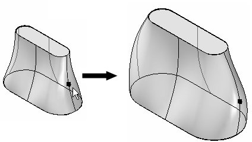
Click the Select tool.
Select curve named side curve 2.
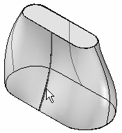
Click the Dynamic Edit button.
Select the red dot on the curve. This will be the edit point on the curve.
Click the Relative/Absolute Position button.
Type -25 in the dY: field and press Enter. This moves the edit point 25 units in the negative Y direction and 0 units in the X and Z direction. The edit is made when pressing Enter.
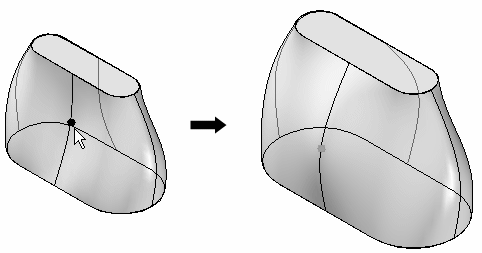
Continue to modify the shape on your own. This completes this portion of the activity. Close and do not save the file.
Open sweep.par.
This file contains sketches and curves to use to define swept protrusions.
The curves provided were created using the Project Curve command. This command is not covered in this activity. These are the trace curves for the swept feature. Lines, arcs, curves, and so on, can be used to define the path trace for the sweep.
On the Home tab→Solids group, choose the Sweep command on the Add list .
On the Sweep Options dialog box, click the Single path and cross section option. Click OK.
Select the curve shown.
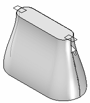
Click the Accept button (or right-click) to accept the trace curve.
The cross section select step is now active. Select the sketch as shown for the cross section.
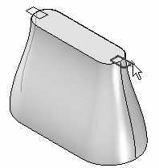
On the command bar, click Finish.
Repeat the previous steps to create a swept protrusion on the opposite side.
Hide the curves and sketch. Right-click the part window and choose Hide All→Curves. Choose Hide All→Sketches.
This completes the activity. Close the file.
In this activity you learned how to create both a swept protrusion and a lofted protrusion. To better manage the geometry, sketches were used to define the cross sections to be swept and lofted. Guide paths were used to control the transition of geometry between cross sections.
-
Click the Close button in the upper-right corner of this activity window.